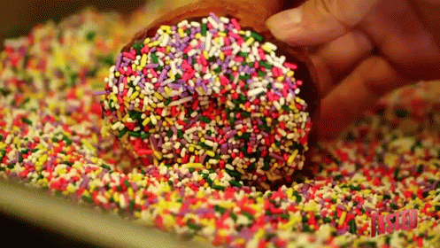

A doughnut or donut (IPA: /doʊnət/) is a type of leavened fried dough.[1] It is popular in many countries and is prepared in various forms as a sweet snack that can be homemade or purchased in bakeries, supermarkets, food stalls, and franchised specialty vendors. 'Doughnut' is the traditional spelling, whilst 'donut' is the simplified version. Both terms are often used interchangeably in the English-language.
Doughnuts are usually deep fried from a flour dough, and typically either ring-shaped or a number of shapes without a hole, and often filled, but can also be ball-shaped ("doughnut holes"). Other types of batters can also be used, and various toppings and flavorings are used for different types, such as sugar, chocolate, or maple glazing. Doughnuts may also include water, leavening, eggs, milk, sugar, oil, shortening, and natural or artificial flavors.

Origins of the Doughnut Shape
The Dutch solution to the gooey, uncooked center of the doughnut was to stuff it with fillings that did not require cooking but Hansen Gregory, an American ship captain, had another solution. In 1847 Gregory punched a hole in the center of the dough ball before frying. The hole increased the surface area, exposure to the hot oil, and therefore eliminated the uncooked center. More colorful versions of Gregory’s invention of the doughnut hole include him impaling a doughnut on the ship’s steering wheel so that he could use both hands to steer, or the idea for the shape being delivered to him in a dream by angels. However Gregory came up with putting a hole in the middle of his olykoek, he is the man credited with inventing the classic hole-in-the-middle shape.
Ingredients
Preparation
STEP 1
Heat the milk until it is warm but not hot, about 90 degrees. In a large bowl, combine it with the yeast. Stir lightly, and let sit until the mixture is foamy, about 5 minutes.
STEP 2
Using an electric mixer or a stand mixer fitted with a dough hook, beat the eggs, butter, sugar and salt into the yeast mixture. Add half of the flour (2 cups plus 2 tablespoons), and mix until combined, then mix in the rest of the flour until the dough pulls away from the sides of the bowl. Add more flour, about 2 tablespoons at a time, if the dough is too wet. If you’re using an electric mixer, the dough will probably become too thick to beat; when it does, transfer it to a floured surface, and gently knead it until smooth. Grease a large bowl with a little oil. Transfer the dough to the bowl, and cover. Let rise at room temperature until it doubles in size, about 1 hour.
STEP 3
Turn the dough out onto a well-floured surface, and roll it to 1/2-inch thickness. Cut out the doughnuts with a doughnut cutter, concentric cookie cutters or a drinking glass and a shot glass (the larger one should be about 3 inches in diameter), flouring the cutters as you go. Reserve the doughnut holes. If you’re making filled doughnuts, don’t cut out the middle. Knead any scraps together, being careful not to overwork, and let rest for a few minutes before repeating the process.
STEP 4
Put the doughnuts on two floured baking sheets so that there is plenty of room between each one. Cover with a kitchen towel, and let rise in a warm place until they are slightly puffed up and delicate, about 45 minutes. If your kitchen isn’t warm, heat the oven to 200 at the beginning of this step, then turn off the heat, put the baking sheets in the oven and leave the door ajar.
STEP 5
About 15 minutes before the doughnuts are done rising, put the oil in a heavy-bottomed pot or Dutch oven over medium heat, and heat it to 375. Meanwhile, line cooling racks, baking sheets or plates with paper towels.
STEP 6
Carefully add the doughnuts to the oil, a few at a time. If they’re too delicate to pick up with your fingers (they may be this way only if you rose them in the oven), use a metal spatula to pick them up and slide them into the oil. It’s O.K. if they deflate a bit; they’ll puff back up as they fry. When the bottoms are deep golden, after 45 seconds to a minute, use a slotted spoon to flip; cook until they’re deep golden all over. Doughnut holes cook faster. Transfer the doughnuts to the prepared plates or racks, and repeat with the rest of the dough, adjusting the heat as needed to keep the oil at 375. Glaze or fill as follows, and serve as soon as possible.
23 Different Types of Donuts (Plus Fun Facts)